Understanding hearing as a dynamic system
linking cochlear mechanics, neural encoding and perception
towards predictive diagnostics
Assoc. Prof. Dr. rer. nat. Bastian Epp
Understanding hearing as a dynamic system
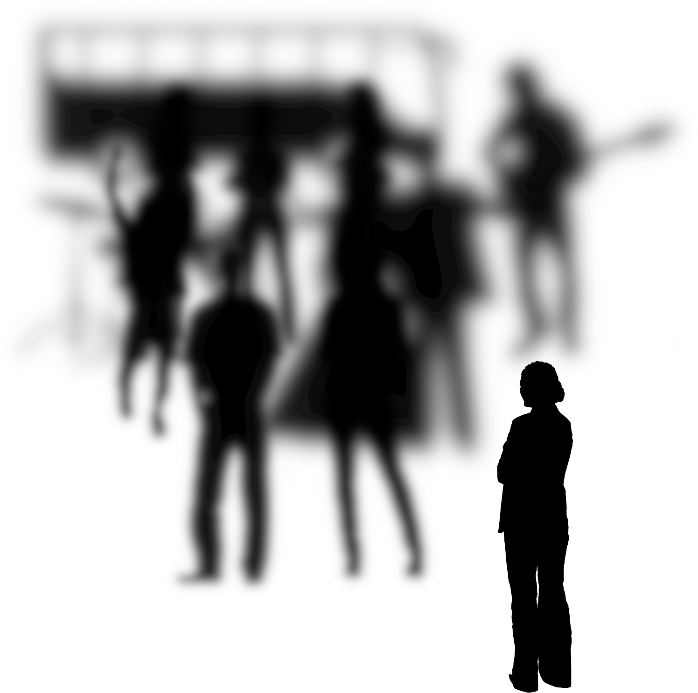
"I can hear - but I don't understand..."
"My hearing aid is bad - What? Don't yell at me!"
"Half-gain is enough..."
"You are (audiologically) all healthy"
We can not fully restore impaired hearing. What are we missing?
Understanding hearing as a dynamic system
Cornerstones of hearing - something is missing!
🎧
🧠
💻
Compression in the cochlea
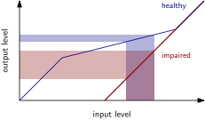
Compression in the cochlea affects the neural representation of amplitude modulation.
Behavioural 🎧, acoustical (OAE), and neural 🧠 data show compression - but auditory nerve activity 💻 show that compression is not local.
(Encina et al., 2021)
Encina et al. (2021), Scientific Reports
🧠
💻
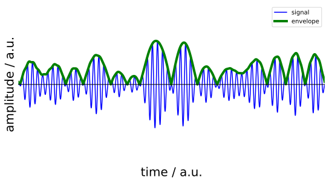
Envelope encoding is important for speech perception!
Envelope encoding is important for speech - and can be quantified in the neural response to sound.
The neural location of envelope encoding 🧠 is spatially displaced by up to 2 octaves along the tonotopic axis 💻.
(Encina et al., 2019)
Encina et al. (2019), JARO
🎧
🧠
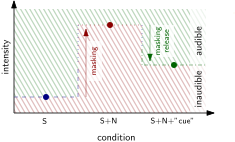
Complex signal properties help to deparate sounds!
Release from masking is reflected in objective neural markers of audibility.
Transition of correlation between audibility [threshold] 🎧 and physical intensity [supra-threshold] 🧠.
(Kim & Epp, 2023)
Kim & Epp (2023), Frontiers in Neuroscience
Can we overcome the limitations in
the understanding of hearing by
generalising
our models to include
biophysical principles?
Understanding hearing as a dynamic system
Can we learn from nature?
The classic way to model hearing
A (physiologically) more plausible way to model hearing
Spontaneous, periodic activity is natural and plausible for a physiological system.
Understanding hearing as a dynamic system
Can we learn from nature?
Circardian rhythm (sleep), pancreatic islets (insuline), heart beat, etc.
Auditory system: Hair cells, spontaneous OAE, brain oscillations, ...
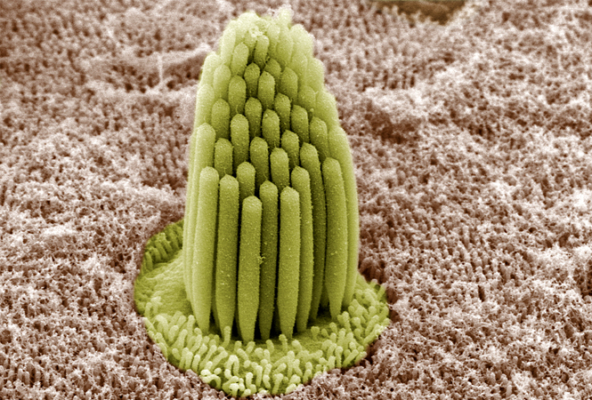
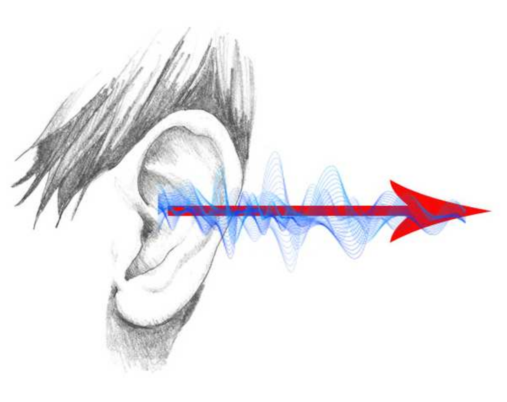
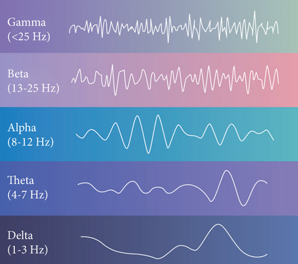
Basinou et al. (2017); Benninger & Piston (2014); Bergevin & Salerno (2015); Helfrich et al. (2014); Mauermann (personal communication)
Understanding hearing as a dynamic system
linking cochlear mechanics, neural encoding and perception
towards predictive diagnostics
Linking cochlear mechanics, neural encoding and perception
One example: Entrainment of a driven (self-sustained) oscillator
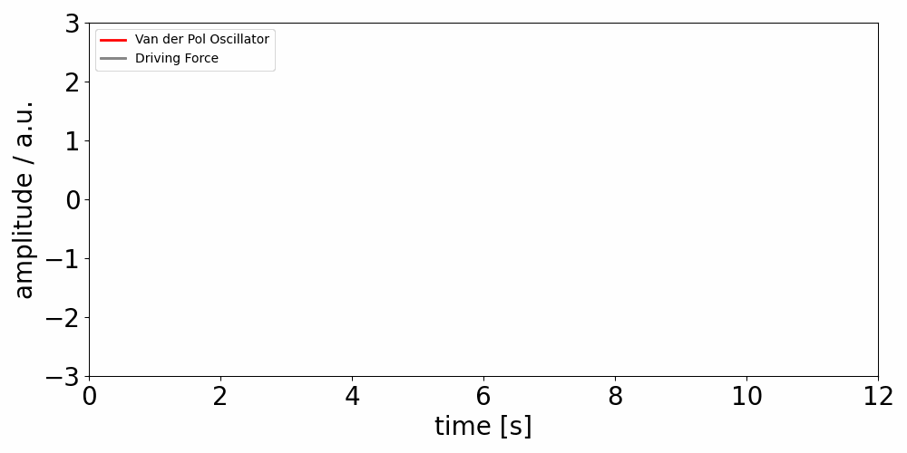
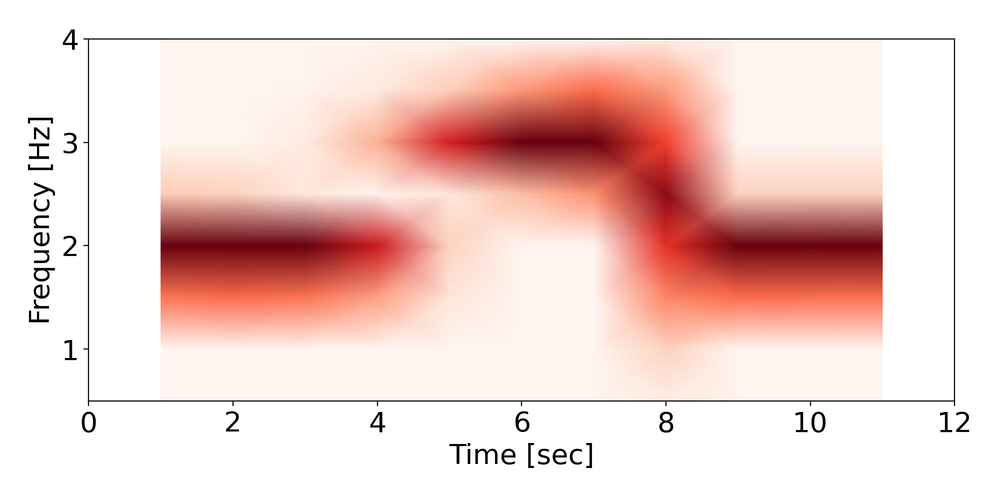
Linking cochlear mechanics, neural encoding and perception
Hearing: Hair cell bundle entrainment
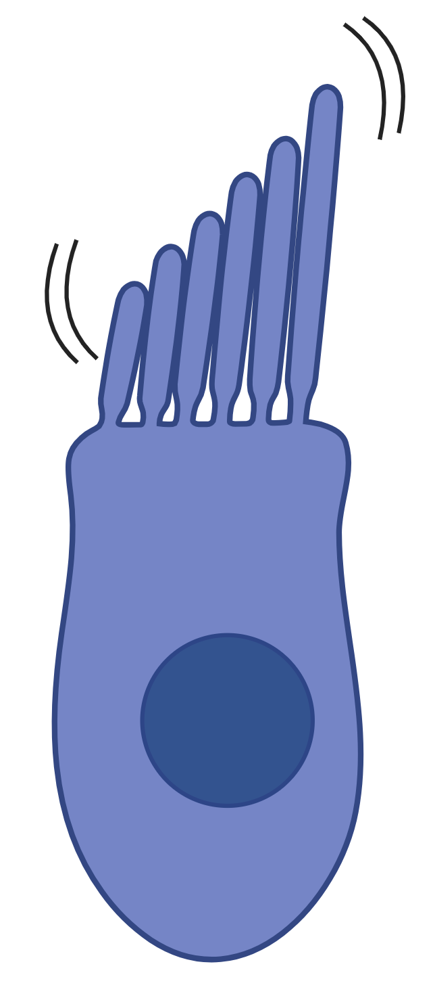
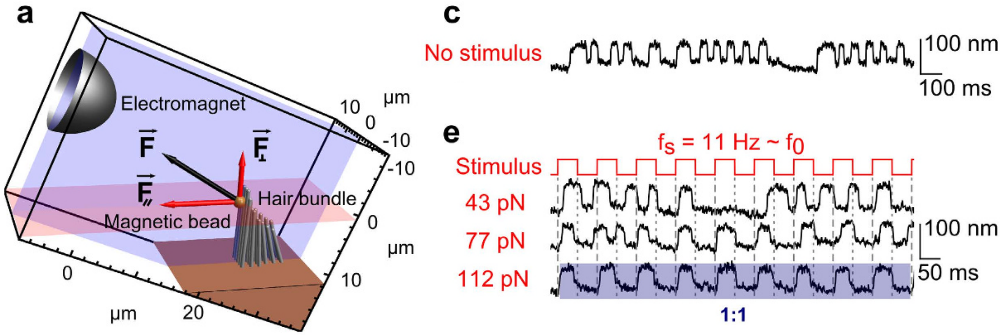
Entrainment is beneficial for information encoding
Mutual information 💻 is higher in a coupled system with entrainment than in an uncoupled system without entrainment.
(Epp & Berrig-Rasmussen, 2026)
WIKIPEDIA; Levi et al. (2016); Epp & Berrig-Rasmussen (2026), CHAOS
Linking cochlear mechanics, neural encoding and perception
Hearing: Spontaneous oto-acoustic emission (SOAE) entrainment
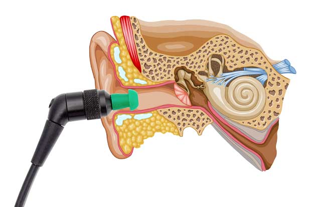
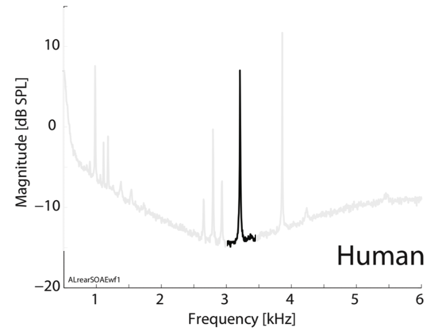
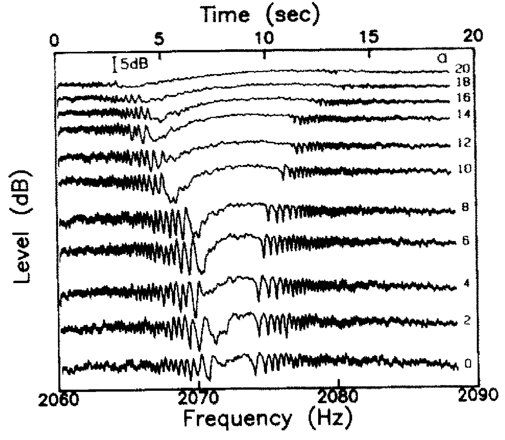
simulated audio
A system of oscillators with entrainment can replicate data of a complex cochlea model.
A simple system of coupled oscillators 💻 can account for SOAE, threshold fine structure, and compression.
(Epp & Nyholm-Christensen, in prep.)
Bergin & Salerno (2015); Long & Tubis (1998)
Linking cochlear mechanics, neural encoding and perception
Hearing: Entrainment of brain oscillations
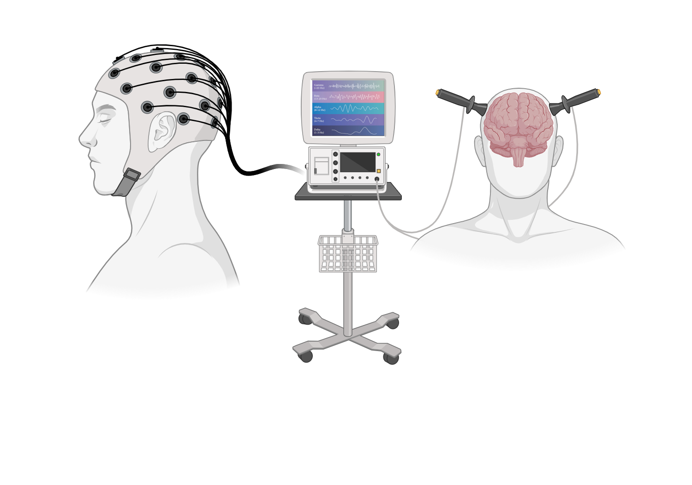
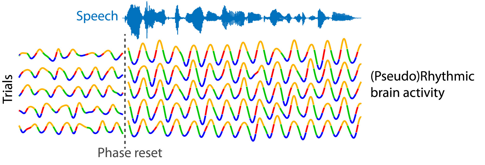
Entrainment in the cochlea and the brain interact.
(to be investigated)
BIORENDER; Obleser & Kayser (2019)
Understanding hearing as a dynamic system
linking cochlear mechanics, neural encoding and perception
towards predictive diagnostics
Towards predictive diagnostics
Defining hearing health based on sensitivity and entrainment to stimulus
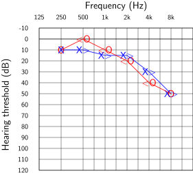
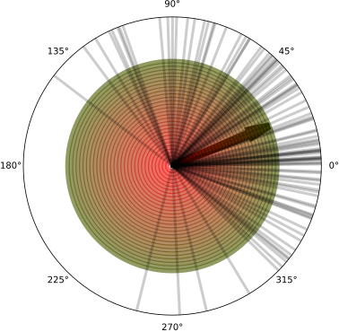
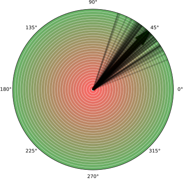
Towards predictive diagnostics
Interaction between periphery and brain
Degree of interaction between periphery and brain
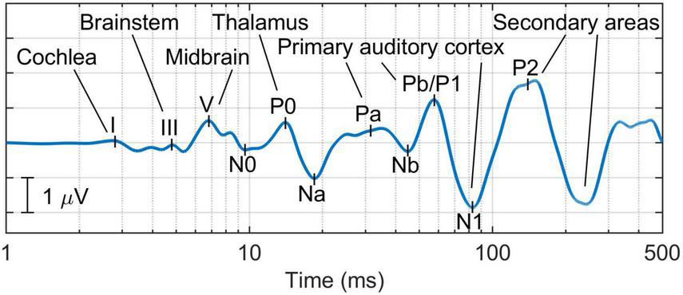
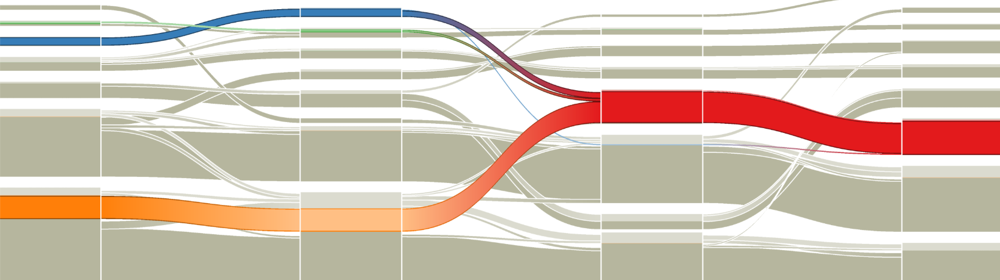
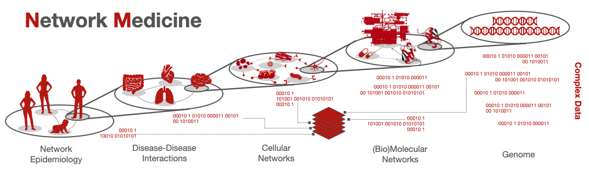
de la Torre et al. (2020); audiologyonline.com; Gao et al. (2024); PCNM University of Padua (online)
Towards predictive diagnostics
Restorative therapy
Mimicking of nature - and restoration (not compensation) of an impaired mechanism
Can we overcome the limitations in
the understanding of hearing by
generalizing
our models to include
biophysical principles?
Maybe we need to include
biophysical principles
to have fun at a
cocktail party.